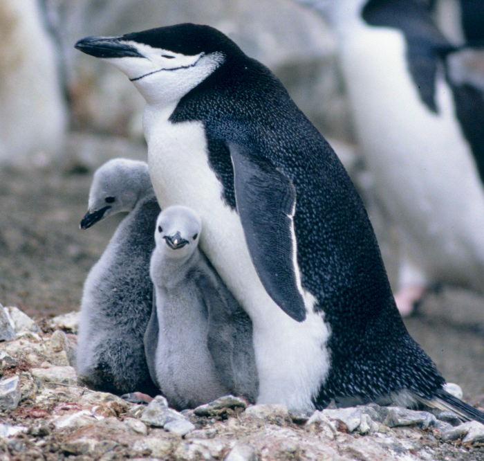

Царство: Тварини
Тип: Хордові
Клас: Птахи
Ряд: Пінгвіноподібні
Родина: Пінгвінові

Мапа поширення усіх видів пінгвінових
Сучасні роди
| Пінгвіни |
|---|
|  |
| Біологічна класифікація |
| Домен:
Еукаріоти Царство: Тварини Тип: Хордові Клас: Птахи Ряд: Пінгвіноподібні Родина: Пінгвінові |
|
Мапа поширення усіх видів пінгвінових |
|
Сучасні роди |
Пінгві́нові (Spheniscidae) — родина кілегрудих птахів. Родина пінгвінові є єдиною групою ряду пінгвіноподібні. Пінгвіни є досить відокремленою групою птахів, що має давнє походження. Ряд налічує 6 родів і 16 видів, які утворюють одну родину. Окрім того, відомо 36 викопних видів. Найстародавніші рештки пінгвінів знайдені в Новій Зеландії (нижній міоцен). Найдавнішим видом був пінгвін Kairuku waitaki.
| Зміст |
|---|
Літати і бігати пінгвіни не можуть, але чудово плавають і пірнають. Наприклад, очкові пінгвіни пірнають на глибину до 130 м, плавають зі швидкістю 6,6 км/год; за день під час годування птахи пропливають близько 27 км, причому на глибині понад 3 м проводять в середньому близько 80 хв на добу. По суші пінгвіни ходять незграбно, перевалюючись і тримаючи тулуб вертикально. У разі потреби вони падають черевом на сніг і ковзають по ньому, відштовхуючись всіма чотирма кінцівками. Швидкість пересування 3–6 км/год. Передні кінцівки пінгвінів видозмінені в еластичні ласти, які завдяки особливому устрою скелета перебувають у напіврозтягнутому стані й під час плавання під водою обертаються в плечовому суглобі майже гвинтоподібно. До добре розвиненого кіля грудини прикріплені могутні грудні м'язи, що керують рухом крил-ластів. У деяких видів пінгвінів грудна мускулатура складає чверть всієї маси тіла, що значно більше, ніж у багатьох птахів, що літають. Кістки, що утворюють скелет крил, дошкоподібно сплющені. За щільністю кісток пінгвіни сильно відрізняються від інших птахів і схожі на морських ссавців. За розмірами пінгвіни різні. Найбільший — імператорський пінгвін (масою 35–40 кг) — досягає в довжину 117 см. Найдрібніший — малий пінгвін заввишки 30–33 см. Статура у пінгвінів щільна, тіло трохи стиснуте в спинно-черевному напрямі. Ноги короткі, товсті, мають по 4 пальці, сполучені плавальними перетинками. Ноги віднесені далеко назад, завдяки чому забезпечується вертикальне положення тулуба на суші. У будові короткого хвоста, що складається з 16–20 пір'їн, на який спирається птах коли стоїть, є риси, схожі з будовою хвоста дятлів. Шия товста і гнучка, дзьоб сильний і гострий. Ротовий апарат діє як насос, всмоктуючи струмінь води разом з дрібною здобиччю. Оперення дуже густе, аптерії відсутні. Дрібне пір'я нагадує щільно прилеглі до тіла лусочки. Забарвлення у більшості видів подібне: темна (чорна) спина і біле черево. Линяння у пінгвінів відбувається раз на рік. Нове пір'я росте під старим, виштовхуючи його, і старе оперення сходить з тіла лахміттям. Під час линяння пінгвіни живуть на суші, в укритому від вітру місці, і нічого не їдять. У негніздовий час зграї пінгвінів мандрують морем, віддаляючись від місць гніздування на багато сотень (до 1000) кілометрів. Більшість птахів повертаються на колишні місця гніздувань. Ворогів у пінгвінів небагато. У морі для них небезпечні морський леопард і косатка, на суші для пташенят — поморник.
Пінгвіни поширені в холодних частинах південної півкулі, головним чином в Антарктиці й Субантарктиці. Деякі види зустрічаються біля південних країв Австралії, Африки, Південної Америки, а там, де в тропіки входять холодні течії, вони зустрічаються до екватора (Галапагоські острови). Географічне розповсюдження пінгвінів значною мірою пов'язане з температурою вод океану, в якому птахи проводять дві третини життя. Вважають, що один з основних чинників, які формують ареали того або іншого виду пінгвінів, — це здатність пташенят цього виду переходити до життя у воді певної температури. Наприклад, для пташенят королівського пінгвіна необхідно, щоб вода на поверхні моря прогрілася до +5 °C. Північна межа розповсюдження більшості видів пінгвінів проходить в межах морської ізотерми +15 −16 °C, що проходить приблизно між 47° 30' і 41°30' пд. ш.
Усі пінгвіни моногамні, пари у них постійні. У морі вони зазвичай тримаються зграями, на суші під час розмноження — утворюють колонії, розмір яких може досягати сотень тисяч пар. Гніздові колонії у більшості видів розташовані на низьких кам'янистих берегах. Одні види роблять на поверхні землі прості гнізда, інші влаштовують гнізда в норах або заглибинах скель (пінгвін перуанський). Самиця імператорського пінгвіна відкладає єдине яйце на лапи й накриває його зверху шкірною складкою. Зазвичай в кладці буває 2 яйця, рідше одне, дуже рідко 3. Насиджують зазвичай обоє батьків. Насиджування, як правило, триває близько місяця (30–39 днів), в імператорського пінгвіна 62–66 днів, у королівського 54 дні. Пташеня імператорського пінгвіна, що тільки що вилупилося, важить 315 грамів, пінгвіна Аделі 80–90 грамів. Пташенята покриті густим пухом і до кінця другого тижня життя сліпі. У пташенят температура тіла вища, ніж у дорослих птахів. У воду пташенята йдуть тільки після линяння. Смертність пташенят дуже висока: від голоду, холоду і хижаків (поморників) часто гине до 70% всіх пташенят, що вилупилися. Приблизно до тритижневого віку з пташенятами постійно тримається один з дорослих птахів. Потім батьки покидають пташенят і лише зрідка повертаються їх годувати. З того часу пташенята починають об'єднуватися в своєрідні тісні групи — «ясла». У яслах може бути від 3 до 64 пташенят (зазвичай їх близько десятка). Масове утворення ясел збігається з іншим явищем: у цей же час в колонію з моря повертаються птахи, що не розмножуються цьогоріч, — статево незрілі 2–3-річні пінгвіни і птахи, що втратили кладки. Цей період має назву «реокупація». Реокупація грає велику роль в житті колонії й підвищує виживання пташенят, оскільки дорослі птахи, що не розмножуються, зазвичай розташовані по периферії колонії, разом з батьками активно відганяють поморників, від яких гине до чверті всіх пташенят. Поморники нападають майже виключно на поодиноких пташенят, і утворення ясел також знижує загибель останніх. Якщо в колонії дорослих птахів більше, ніж пташенят, то ясла зазвичай не утворюються.
Дорослі пінгвіни живляться дрібними рибами, дрібними головоногими молюсками і планктонними ракоподібними, головним чином рачками-евфавзиїдами (криль). Згідно з даними останніх досліджень, у чубатого і золотоволосого пінгвінів за час вигодовування пташенят, яке триває 70 днів, дорослі приносять пташенятам їжу приблизно 30 разів. Пташеня чубатого пінгвіна отримує за одне годування до 0,65 кг, а за весь час вигодовування до 15 кг крилю, пташеня золотоволосого пінгвіна — відповідно 2 кг і 33 кг.
У середньому пінгвіни мають в 3 рази більше пір'їн ніж інші птахи. Пір'їни малі й жорсткі й розташовані так щільно, що формують повітряну подушку між шкірою та пухом, що служить надійною теплоізоляцією. Однак, кожна пір'їна керується м'язом, що дозволяє південноафриканським пінгвінам розкривати цей захист і позбавлятися зайвого тепла.
Пересування перевальцем характерне усім видам пінгвінів. За відсотком енергії, яка зберігається протягом одного кроку — міра, відома також як швидкість відновлення — пінгвіни дуже ефективні: у той час як швидкість відновлення людини, наприклад, близько 65 відсотків, для імператорських пінгвінів цей показник становить 80 відсотків — один з найвищих серед наземних тварин — і це завдяки руху з боку в бік. Ефективність завдячує використанню гармонійного руху подібно перевернутому маятнику. При русі маятника існує безперервне перетворення потенційної енергії в кінетичну, енергія розсіюється тільки через виснаження. Як і в маятника в кінці кожного коливання в пінгвінів накопичується енергія, яка використовується при наступному кроці.
Щоб з'явилося потомство, імператорські пінгвіни-самці повинні 105–115 днів витримати при холоді, що опускається до −50 градусів за Цельсієм. Було виявлено, що самцям, які збились у групи вдається підтримувати швидкість метаболізму, що на 25% нижча, ніж виміряна для самотніх птахів. Пінгвіни в малих групах також не можуть тулитися ефективно. Лише збившись у великі стада (сотні й тисячі особин) пінгвіни можуть висидіти яйця. Різниця температур між центром великої групи й периферії може сягати півсотні градусів, і центральним самцям необхідно час від часу перебиратися на периферію, щоб уникнути перегрівання. Імператорські пінгвіни не туляться друг до друга щільно, замість цього вони ледь торкаються, таким чином залишаючи зовнішній, ізоляційний шар пір'я непом'ятим. Це дуже важливо і тому варто котромусь члену групи трошки здвинутись, і це викликає ланцюгову реакцію сусідів, які зміщуються так, щоб відновити потрібну дистанцію.
Там, де пінгвіни стикалися з людиною, місцеві жителі в невеликій кількості використовували їхнє м'ясо в їжу, збирали яйця. Під час розвитку китобійного промислу в Антарктиці пінгвінів почали винищувати китобої. Поступово заселялися субантарктичні острови, на них завозили наземних тварин, які перейшли на живлення пінгвінами, їхніми яйцями та пташенятами. У останні десятиліття численні наукові бази в Антарктиці й розвиток туризму також нанесли велику утрату чисельності пінгвінів, особливо видам з обмеженим ареалом. Науковці встановили на Антарктичному півострові камери зовнішнього спостереження, аби стежити за колоніями пінгвінів.
Пінгвін також є емблемою сімейства операційних систем «Лінукс». Пінгвін, що зображений на логотипі лінукс, має ім'я Такс.